Cursos01 / 07
Canto
Su voz, con técnica.
Respiración, afinación y técnica vocal, paso a paso. Para empezar desde cero o para mejorar lo que ya sabe.
Quiero clases de canto Volver al sumarioEscuela de música · Santiago de SurcoLun. a sáb. · 10 a. m. a 7 p. m.
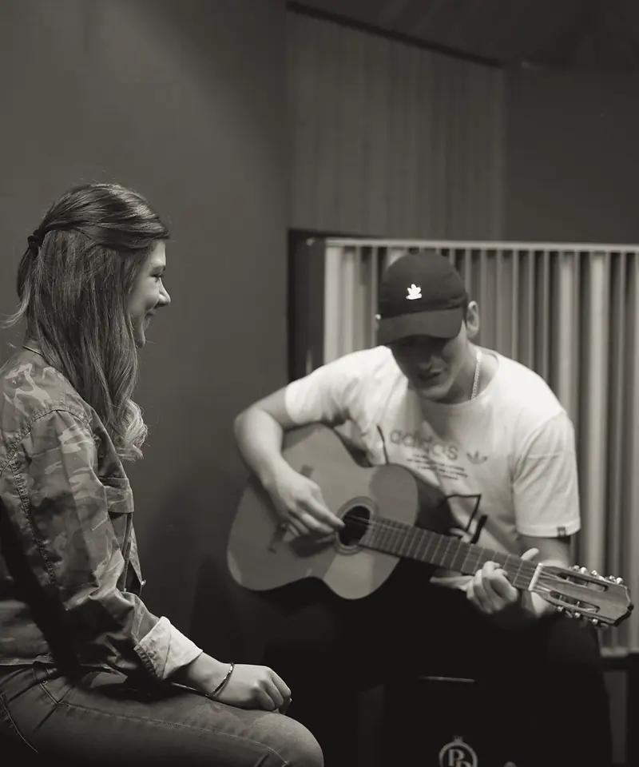
Clases de canto, guitarra, piano, bajo, batería, ukelele y producción musical, para todas las edades.
SumarioCursos 01 — 07
Elija su instrumento: en cada ficha está cómo es la clase y el botón para preguntar por horarios.
Cursos01 / 07
Su voz, con técnica.
Respiración, afinación y técnica vocal, paso a paso. Para empezar desde cero o para mejorar lo que ya sabe.
Quiero clases de canto Volver al sumarioCursos02 / 07
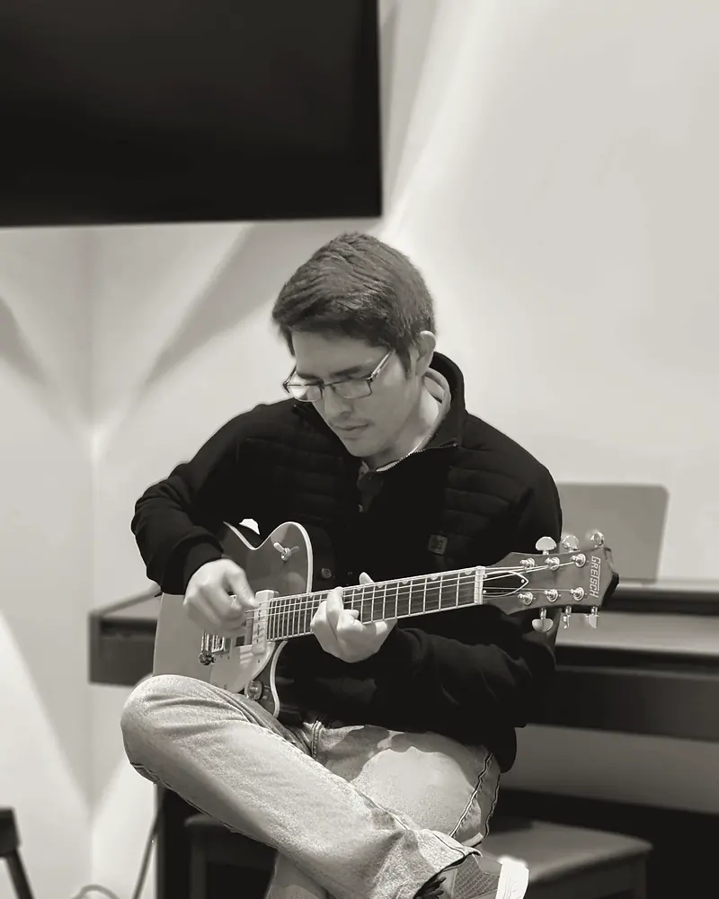
Desde los primeros acordes.
Postura, acordes, ritmo y lectura, al paso de cada alumno: el niño que recién empieza y el adulto que quiere retomar.
Quiero clases de guitarra Volver al sumarioCursos03 / 07
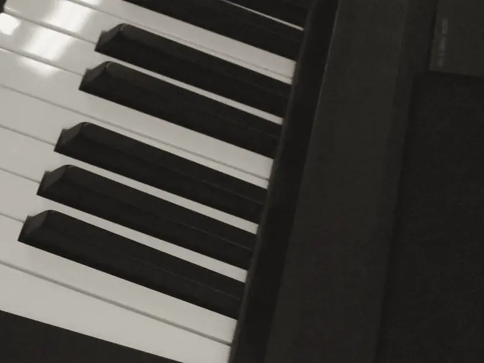
Las dos manos, a su tiempo.
Lectura de partitura, técnica y coordinación de ambas manos. Se avanza clase con clase, desde lo que usted ya sabe.
Quiero clases de piano Volver al sumarioCursos04 — 05 / 07
La base rítmica.
Bajo y batería: lo que hace que una banda suene junta.
El pulso de la banda.
Ritmo, groove y lectura: la base que sostiene cualquier canción.
Quiero clases de bajoCoordinación y tempo.
Manos y pies coordinados, tempo firme y ritmos de distintos estilos.
Quiero clases de bateríaCursos06 / 07
Cuatro cuerdas para empezar.
Pequeño, liviano y fácil de llevar: un buen primer instrumento para los niños y para quien nunca ha tocado.
Quiero clases de ukelele Volver al sumarioCursos07 / 07
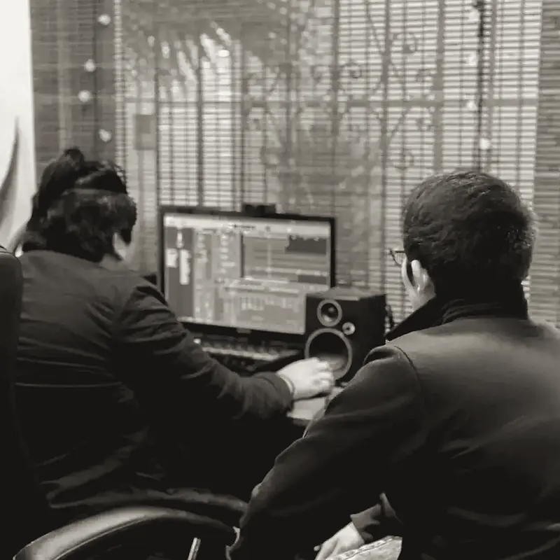
De la idea a la canción terminada.
Composición, arreglos, grabación y mezcla en la computadora, paso a paso.
Quiero clases de producción Volver al sumarioLas clasesLo que hay que saber
Los precios y los horarios libres se los pasamos por WhatsApp.
Reservar una clase de pruebaReseñas5.0 en Google · 75 reseñas
Un excelente lugar donde aprender música. La enseñanza es personalizada y el profesor da seguimiento a los avances. Enseña muy bien y se ve en los resultados. 20/10
El profe es genial, muy amable, flexible con los horarios y se nota el aprendizaje clase con clase.
Un profesor muy atento, logró acomodar mi horario para las clases y aprendí un montón!!
Excelentes clases, el profesor es muy profesional y da clases de gran calidad
El estudioGrabación y mezcla
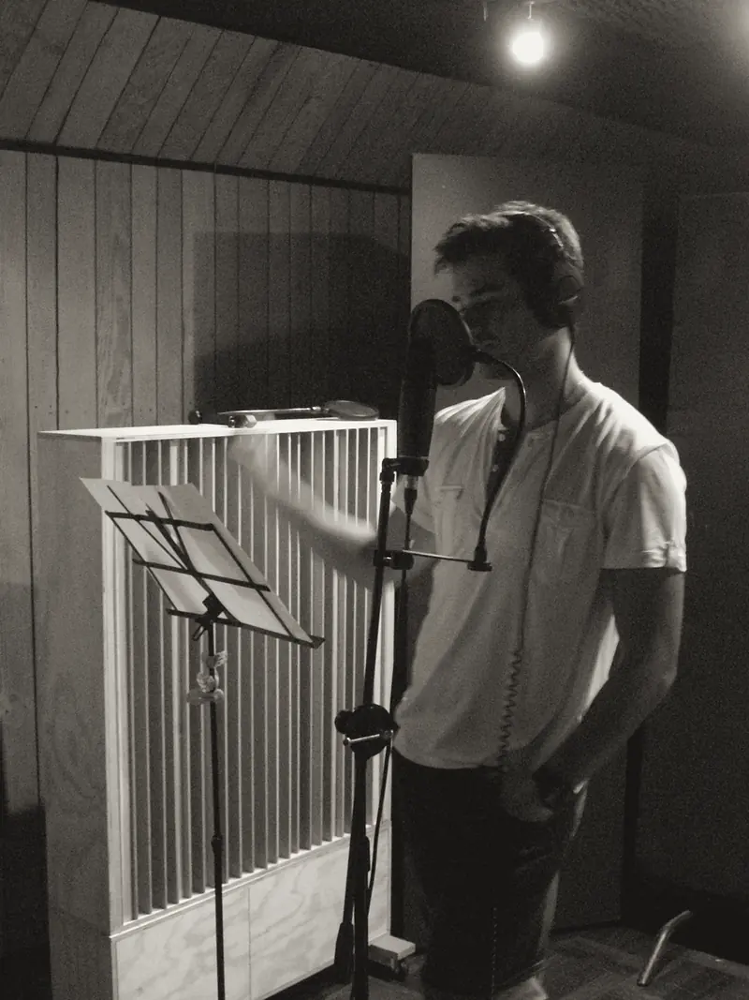
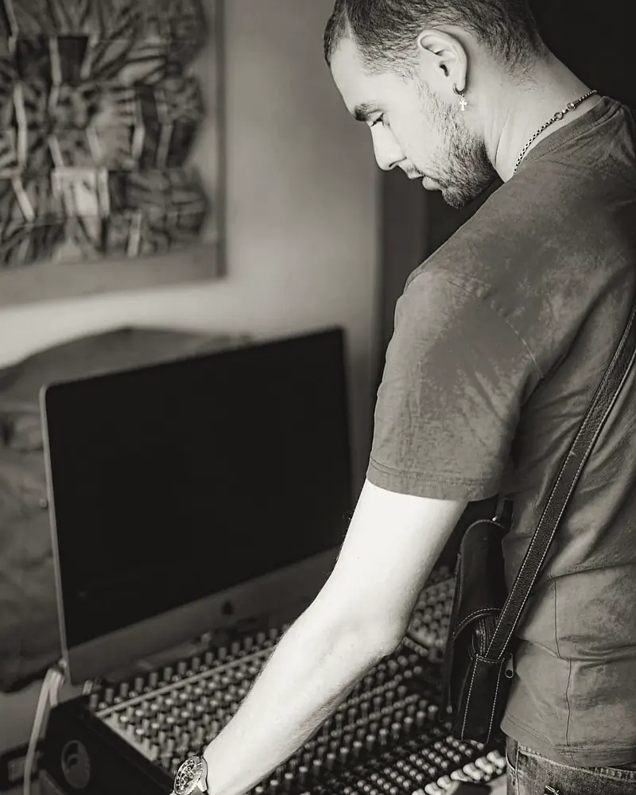
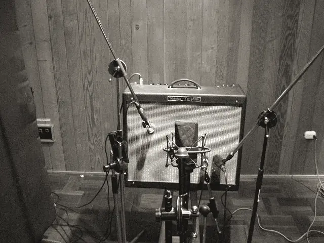
Además de las clases, en Neo Music se graba, se compone y se produce, para todos los géneros.
En la salaFotos: Neo Music
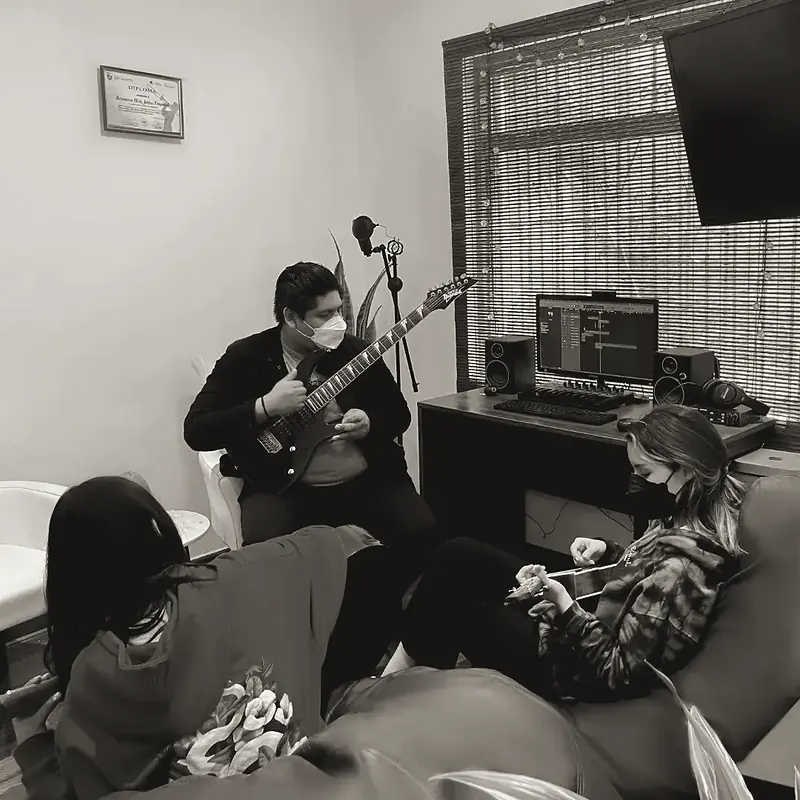
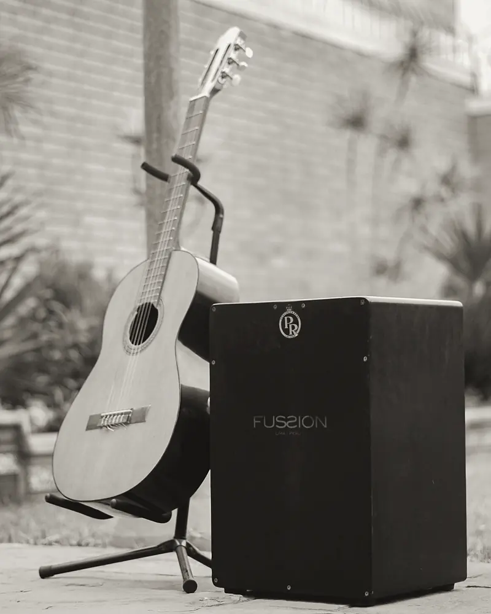
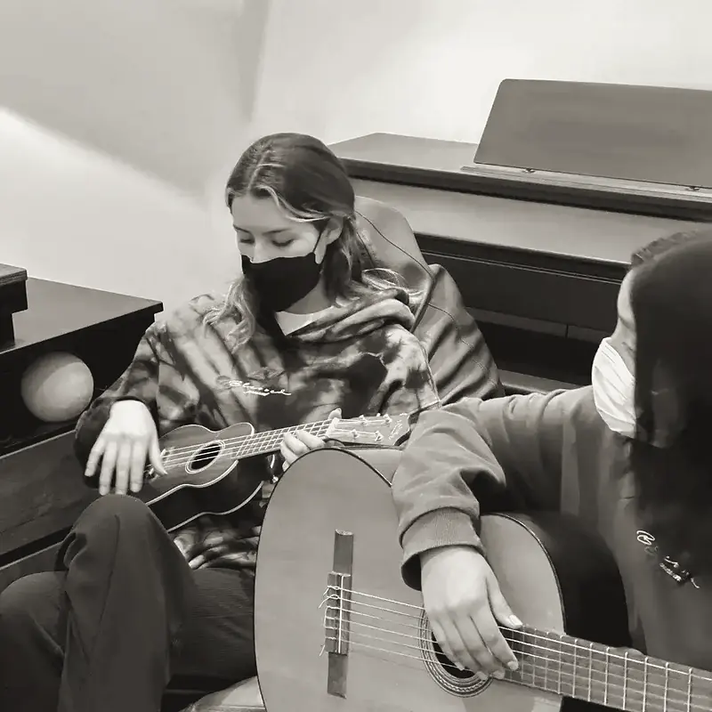
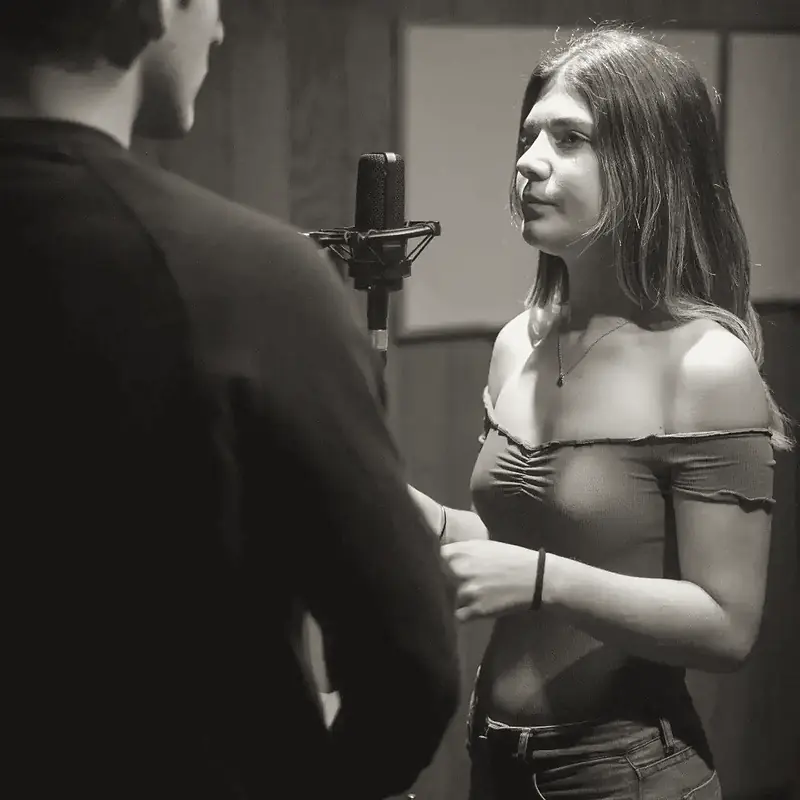
CupónComplete y envíe
Complete los datos y se abre su WhatsApp con el mensaje listo. Le respondemos con horarios y precios.
VisítenosSantiago de Surco, Lima
12°06′43″ S · 76°58′31″ O
Así le escribirán sus alumnos desde su página
Este botón abre el WhatsApp de Neo Music con la consulta ya escrita. Hoy su página todavía no está activa: quien busca clases de música en Google no llega a este botón y le escribe a otra escuela.
Activar mi página con José → Probar el botón igual